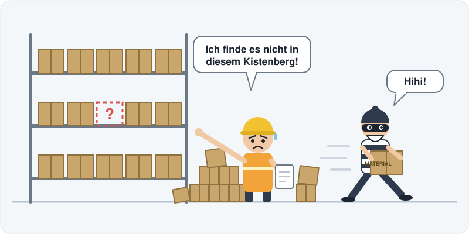
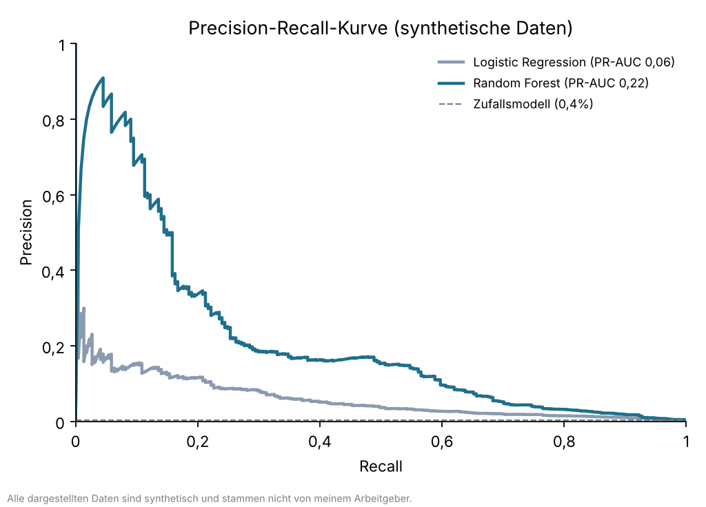
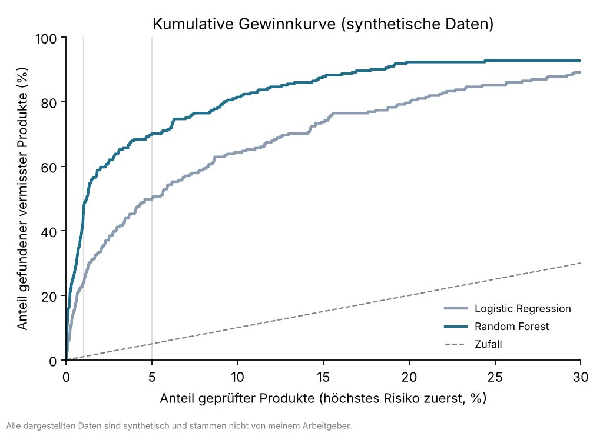
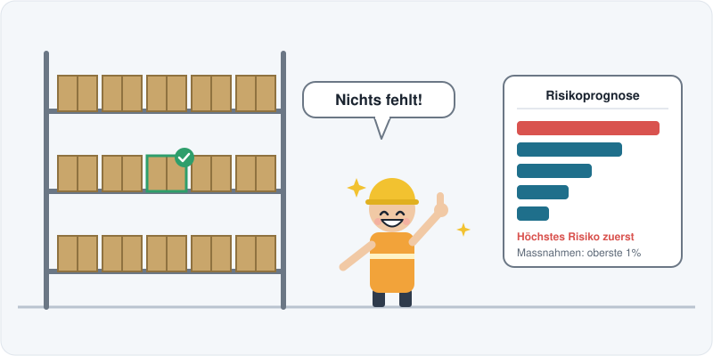

Vorhersage vermisster Produkte mit Machine Learning
Machine Learning · Klassifikation bei unausgeglichenen Daten
Diese Fallstudie zeigt einen realen Fall, an dem ich gearbeitet habe, dargestellt mit synthetischen Daten.
Problem
Produkte und Materialien können aus vielen Gründen verloren gehen (z. B. in der Lieferkette, bei konzerninternen Transfers oder nach einem Transport). Diese Verluste verursachen hohe Kosten, Umtriebe oder sogar längere Durchlaufzeiten für Kundinnen und Kunden sowie für das Unternehmen.

Daten
Historische Produktdaten aus einem Jahr. Für diese Darstellung wird ein synthetischer Datensatz mit 200’000 Produkten verwendet, von denen etwa 0,4% verloren gingen. Er bildet die Struktur des realen Problems nach, enthält aber keine seiner Werte.
Vorgehen
- Training einer logistischen Regression (Baseline) und eines Random Forest, um die Wahrscheinlichkeit vorherzusagen, dass ein Produkt verloren geht.
- Umgang mit dem starken Klassenungleichgewicht mittels Klassengewichten.
- Evaluation auf einem separaten Testdatensatz mit PR-AUC, da die Accuracy bei seltenen Ereignissen irreführend ist.
- Messung von Precision und Recall für die obersten 1% und 5% der Produkte mit dem höchsten vorhergesagten Risiko, weil das die Gruppen sind, auf die das Geschäft realistisch reagieren kann.
Ergebnisse
| Modell | PR-AUC | Top 1% Precision / Recall | Top 5% Precision / Recall |
|---|---|---|---|
| Zufallsmodell | 0,004 | 0,4% / 1% | 0,4% / 5% |
| Logistische Regression | 0,06 | 8,8% / 24% | 3,7% / 50% |
| Random Forest | 0,22 | 16,8% / 46% | 5,2% / 70% |
- Der Random Forest schneidet am besten ab. Seine obersten 1% der Risikowerte enthalten etwa 40-mal mehr vermisste Produkte als eine Zufallsauswahl.
- Würde man nur die obersten 5% der Produkte prüfen, würde man etwa 70% aller Verlustfälle erfassen.
- Die Precision bleibt niedrig, weil vermisste Produkte selten sind. Die meisten markierten Produkte sind daher Fehlalarme. Das ist der Preis der Vorhersage seltener Ereignisse. Die Konzentration auf eine kleine Hochrisikogruppe reduziert das Problem dennoch deutlich.


Empfehlung
Das Modell nutzen, um die Produkte mit dem höchsten Risiko vorherzusagen und gezielt zu behandeln.
Roll-out-Plan
Geschäftlicher Nutzen
Die Vorhersagen ermöglichen es dem Geschäft, Verluste proaktiv zu verhindern, Ressourcen besser zu planen und den Aufwand dort einzusetzen, wo er am wichtigsten ist.

Meine Rolle
Ich habe das gesamte Projekt selbständig initiiert, konzipiert, umgesetzt und getestet und die Empfehlung sowie den Roll-out-Plan für das Geschäft erarbeitet.
Tools
- SQL
- Python
- pandas
- numpy
- scikit-learn
- matplotlib